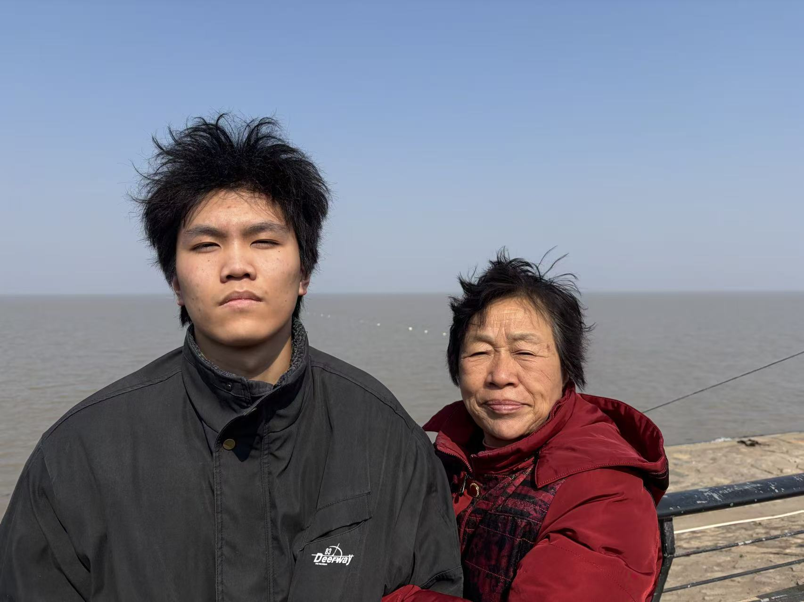

这里是我记录生活的小小空间。关于工作中的技术心得、家庭中的温暖瞬间、闲暇时的动画创作，以及一路走来的理财思考。感谢你的来访 🌱
完成了变性淀粉在珍珠粉圆中的应用技术报告，对 HPDSP + 魔芋胶的复配方案做了系统分析。
芯片行业基金持仓占比提升至 30%，整体收益率 +8.2%。整理了投资仪表盘方便日常跟踪。
带家人去了青岛，拍了超多照片。海鲜市场、老城区、海边日出，满满的回忆。
用 CSS + SVG 做了一组关于"珍珠粉圆微观世界"的交互动画，发在了个人页面上。
动画作品、手工制作、技术折腾 —— 工作之外的另一面。
成长日记、旅行相册、生活片段 —— 最珍贵的都在这里。
食品配料行业的技术随笔、行业观察与思考。
基金持仓、收益曲线、投资心得 —— 慢慢变富。